Chapters
Highlights
Personal Project
Project June
I want a Mars rover, and if I cannot buy one, I will build one myself. That's the motivation behind this project. The rover streams three live video feeds of its surroundings together with GPS data and sensor readings like temperature, humidity, pressure, brightness, and more, helping the operator understand and navigate the terrain with confidence.
Demo Video
Project June
I planned to build Project June in two weeks, but it took me three. It was definitely rushed, and there are a lot of things I wish I had done differently. Even so, it is still one of the most ambitious projects I have worked on. I’m just saying this so you do not get your hopes up too much HAHA
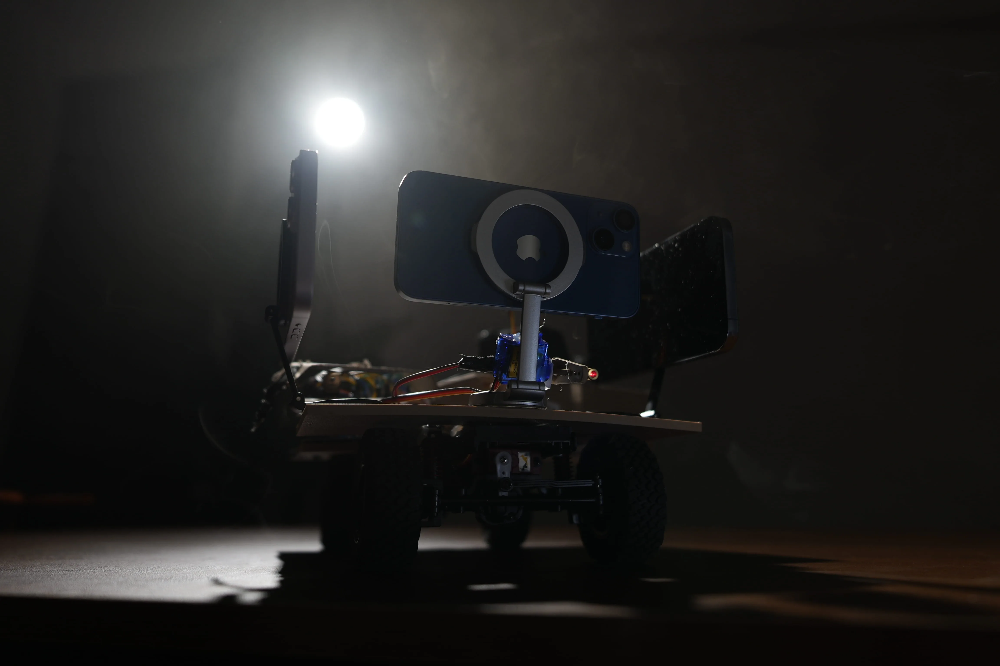
The original Project June photoOnboard Systems
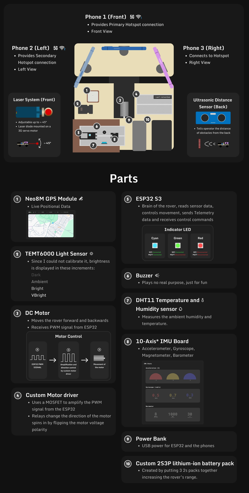
Ultrasonic Distance Sensor
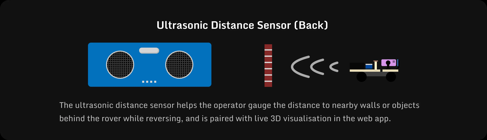
Laser System
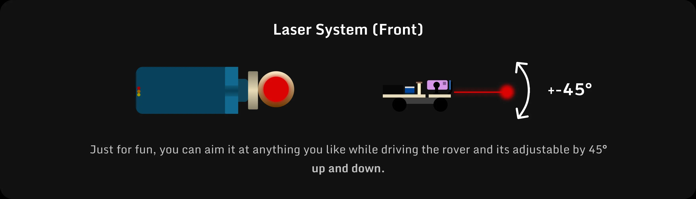
Live GPS
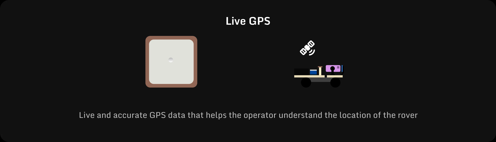
10 Axis IMU
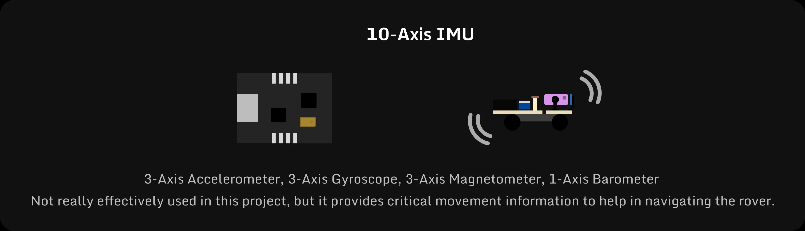
Light Sensor
DHT11 Temp & humidity
Technical Architecture
This is a overview of how each system functions and how they all interact with each other.
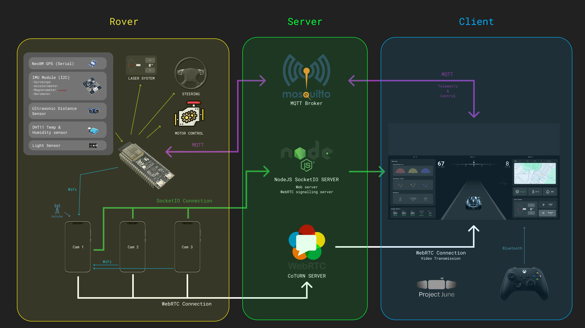
Live Stream System
This diagram shows how the whole live streaming system works, it is 3 different WebRTC streams that send the live video to the client
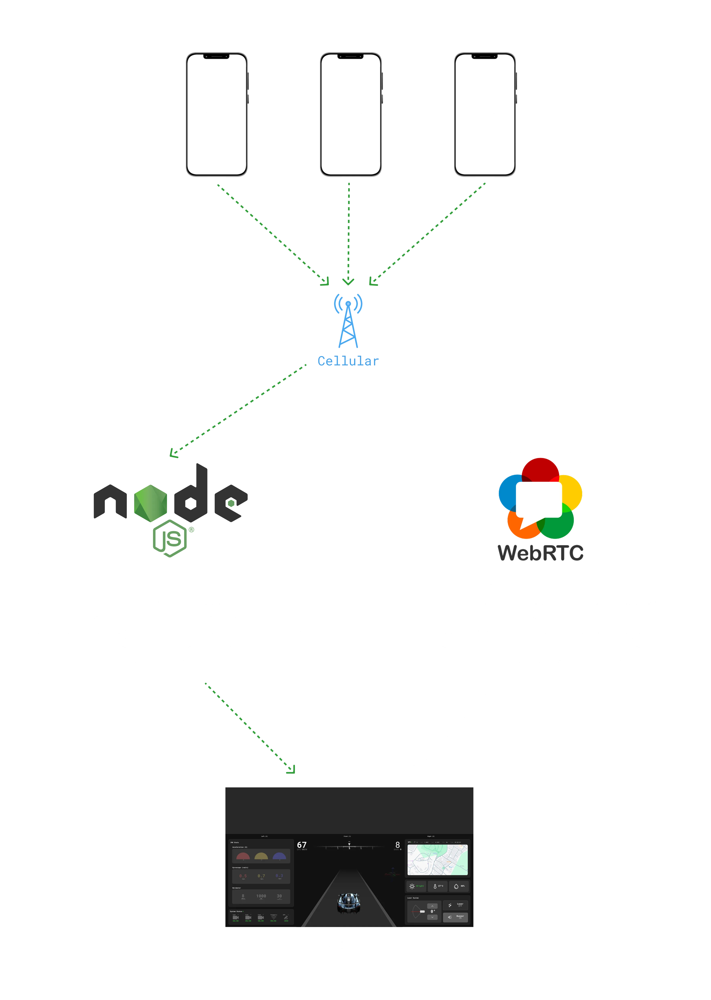
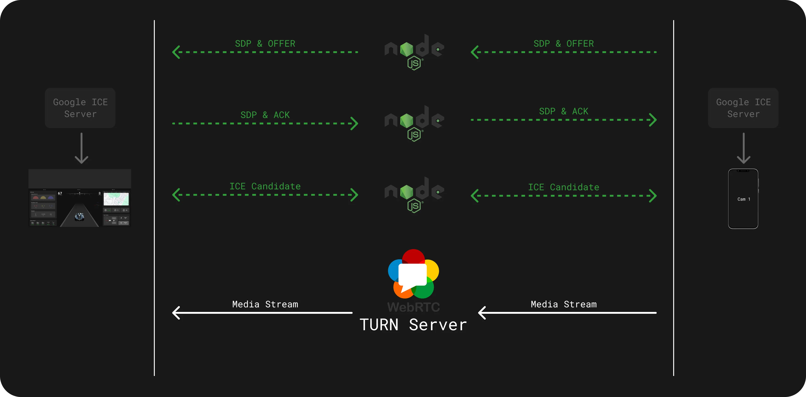
Control & Telemetry System
The Control and telemetry system feeds sensor data for the rover to the client using an MQTT topic that the client is subscribed to, another MQTT topic is used by the client to send back commands and movement commands back to the ESP32
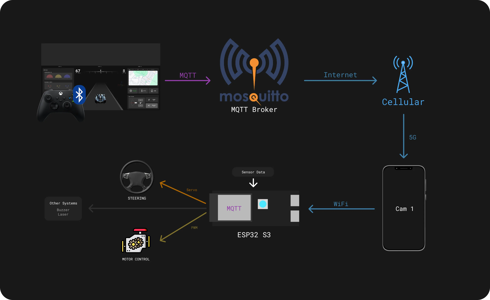
Signalling
Because of an issue that has not yet been resolved, all sensor data could not be sent together in a single MQTT transmission. Instead, the data was divided into three separate packets and transmitted individually at approximately 10 Hz. The client sends the control packet after receiving the third sensor packet, so the control timing is synchronised with the incoming sensor data stream.
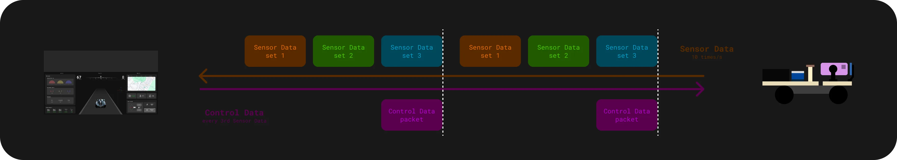
Software
Here is the simplified flow chart of how the code works.
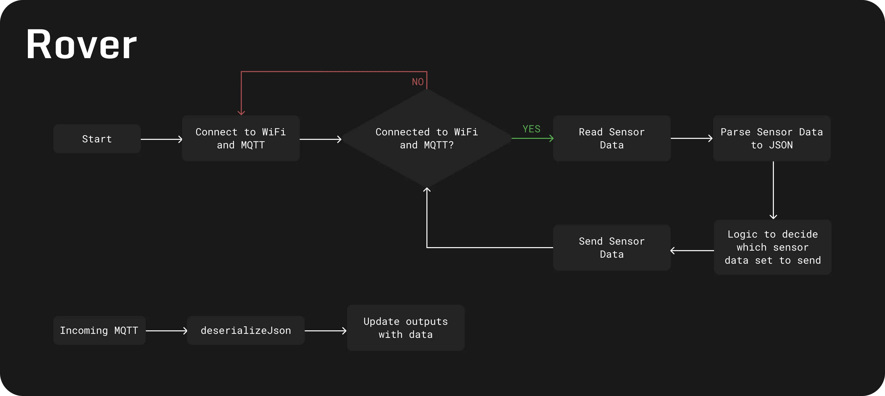
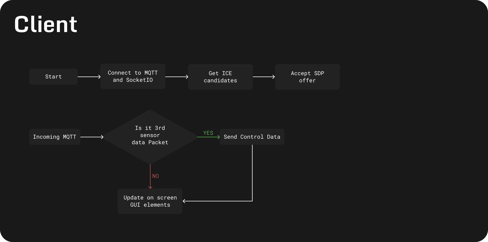
Software Design (Figma)
Spline3D
I used spline3D for the 3D elements in the UI and Splinetool in Js to control its elements, when you push the controller foward, the model moves into foward view, and if you move it back, it goes into the reverse view.
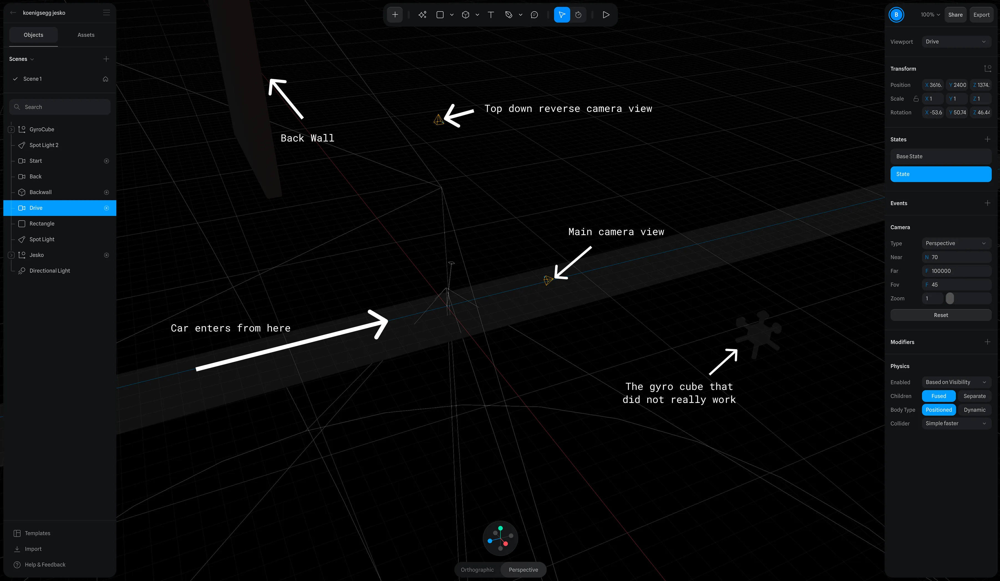
Spline3D The live animationDriving Project June
Driving Project June was an unforgettable experience. It turned out to be much easier to drive than I expected, but the roughly one-second delay between controller input and movement appearing on the live feed, combined with the instability of the stream, still made it challenging at times. Even then, that one-second delay was incredibly impressive. Thinking about how my controller input had to travel through so many layers of systems, while the video feed was being sent from over 8 kilometres away, still blows my mind. The rover did end up trashed, but you will have to watch the YouTube video linked at the top of the page to find out what happened.
Github
Project June
A rover control system with WebRTC video streaming, MQTT telemetry, and ESP32 sensor integration.
View GitHub Repo